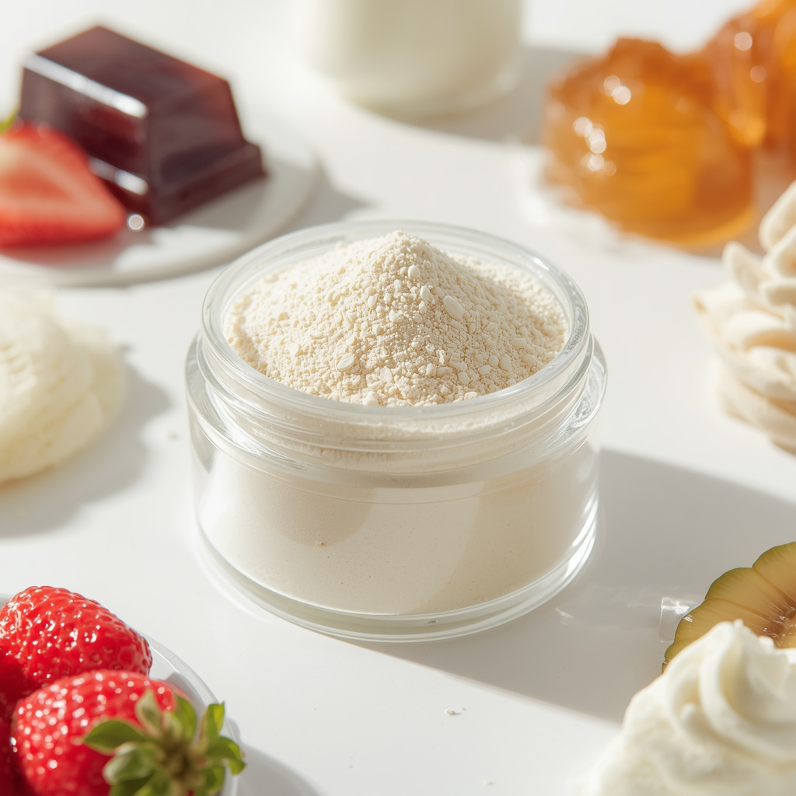
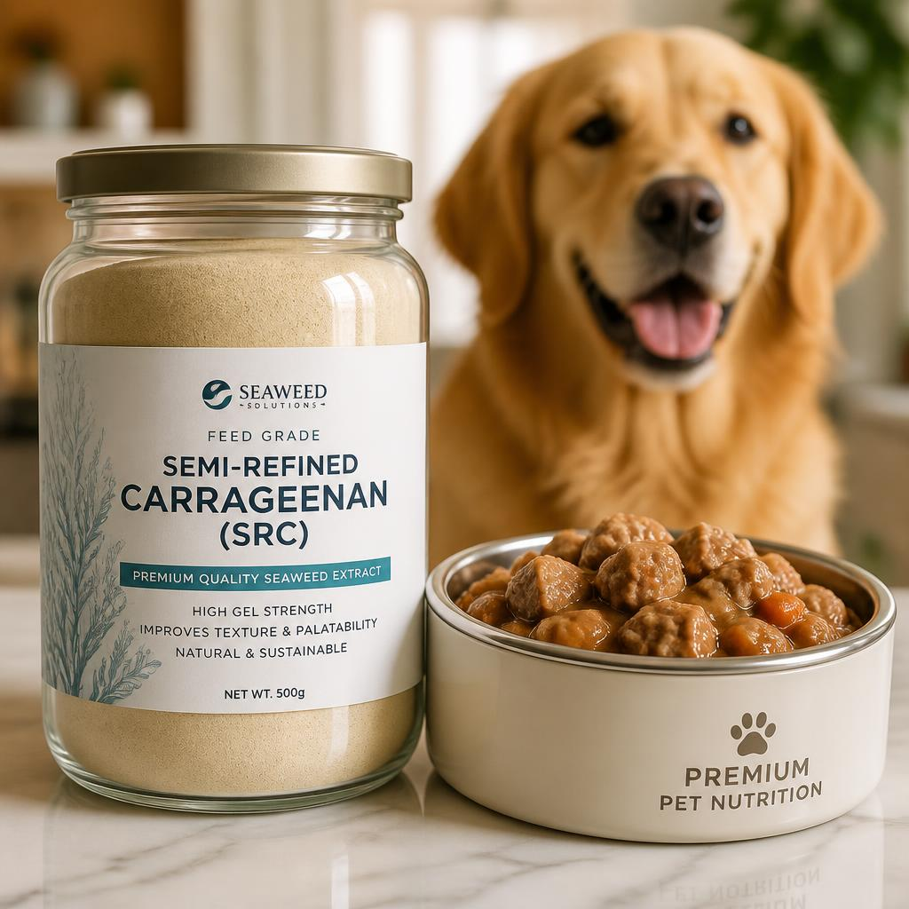
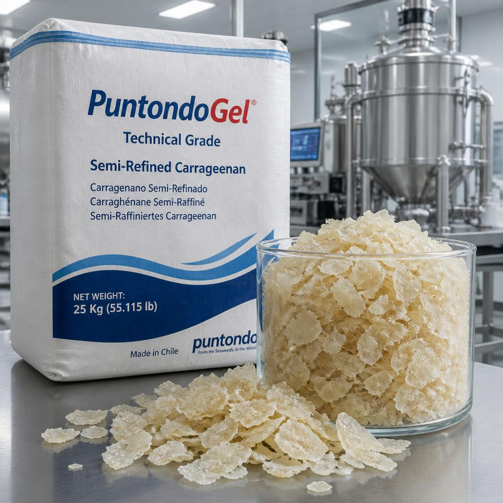

About Ainoor Trading
Learn more about our company profile, leadership, and marine commodity sourcing.
Cottonii Commodity & Processed Line

Raw Dried Eucheuma Cottonii (Nori Raw Material)
- Khusus Bahan Baku Nori: Diproses khusus sebagai bahan dasar lembaran nori rumput laut
- Tekstur serat terjaga, tingkat kekeringan tinggi, dan bebas kontaminasi lumpur/pasir
- Dipanen langsung dari kemitraan petani pesisir Sulawesi Selatan

PuntondoGel – Food Grade (Mesh 80–100)
- Kategori: Food Additive (E407a) / Pengental & Pengikat Pangan
- Fungsi Utama: Meningkatkan kenyal, menahan kadar air, dan menstabilkan tekstur makanan
- Aplikasi Olahan: Sosis, bakso, nugget, es krim, yogurt, jelly, dan agar-agar

PuntondoGel – Pet & Feed Grade (Mesh 60–80)
- Kategori: Feed Additive / Pembentuk Gel Pakan Hewan
- Fungsi Utama: Membentuk lapisan jeli (jelly/loaf) dan mengentalkan kuah (gravy)
- Aplikasi Olahan: Makanan kucing & anjing basah (wet canned pet food) dan pelet ternak

PuntondoGel – Technical Grade (Chips / Flakes)
- Kategori: Industrial Raw Material / Rumput Laut Olahan Setengah Jadi
- Fungsi Utama: Bahan baku ekstraksi tingkat lanjut & pengental industri non-makanan
- Aplikasi Olahan: Bahan baku Refined Carrageenan (ekspor), pengharum ruangan gel, & tekstil

Cottonii-Based Liquid Fertilizer (POC Rumput Laut)
- Biostimulan Bio-Proses: Ekstrak murni Eucheuma Cottonii kaya auksin, sitokinin, & hara mikro
- Peruntukan Tanaman Pangan: Padi, jagung, kedelai, dan umbi-umbian
- Peruntukan Hortikultura & Perkebunan: Cabai, tomat, melon, kelapa sawit, kakao, & kopi

Coastal Food & Industrial Sea Salt
- Garam Laut Alami: Diproduksi melalui evaporasi sinar matahari di wilayah pesisir murni
- Manfaat & Kegunaan: Mengawetkan makanan alami, penyeimbang rasa, & menjaga kadar air bahan pangan
- Tambahan Makanan & Olahan: Pengawetan ikan & daging, bumbu tabur, saus, produk asin hasil laut, & kecap